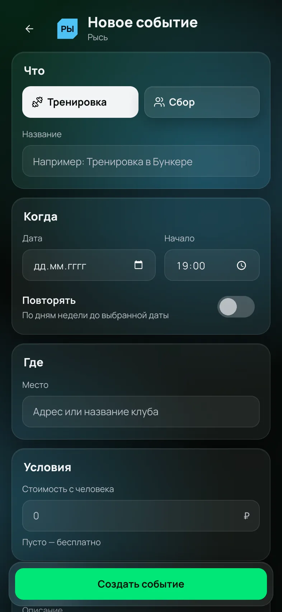
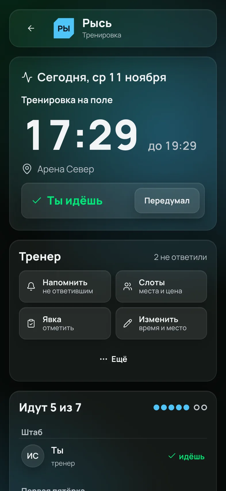
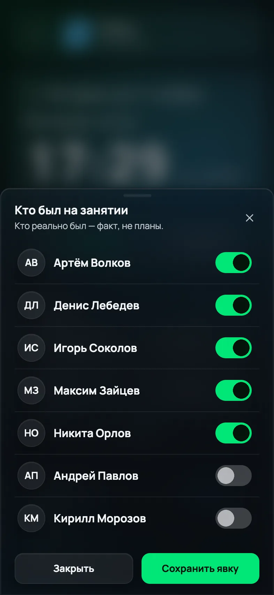
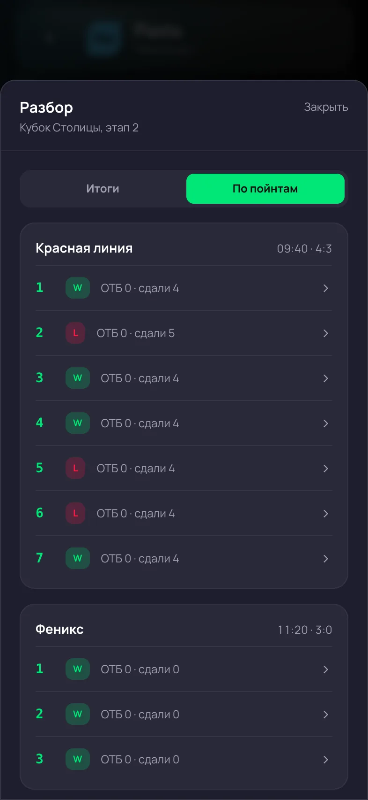

Что может делать тренер
- Создавать тренировки и сборы.
- Создавать несколько повторяющихся тренировок.
- Отмечать участников.
- Отмечать выигранные и проигранные пойнты.
- Добавлять заметки к игровым отрезкам.
- Смотреть итоговый разбор события.
- Принимать заявки в команду.
- Отправлять ссылку команды новым игрокам.
Создать тренировку или сбор
Что сделать
- Нажми зелёный «плюс» на нижней панели.
- Выбери «Тренировка» или «Сбор».
- Напиши название, укажи дату, время и место.
- Для повторяющихся занятий включи «Повторять», выбери дни недели и дату, до которой повторять, — создастся сразу несколько событий.
- Нажми «Создать событие».


Что получится
Участники увидят новое занятие, а через три минуты им придёт сообщение с кнопками «Иду / Не иду».
Отметить участников
Что сделать
- Открой тренировку или сбор.
- Посмотри ответы команды: «Идут», «Не ответили», «Не идут». Тем, кто молчит, можно написать кнопкой «Напомнить».
- Когда занятие началось, нажми «Явка».
- Отметь тех, кто фактически участвовал, и нажми «Сохранить явку».




Что получится
Будет сохранён точный состав занятия. Эти данные можно использовать при последующем разборе.
Отметить пойнты и вести разбор
В приложении отдельный отрезок игры называется пойнтом. Счёт игры вносит капитан, а тренер размечает, какие пойнты выиграли и проиграли.
Что сделать
- Открой нужное событие и найди «Расписание игр».
- Нажми «Пойнты» рядом с игрой.
- Для каждого пойнта нажимай на значок слева: он переключается «—» → «W» (выиграли) → «L» (проиграли) → снова «—».
- Проверь, что количество побед и поражений совпадает со счётом: приложение подскажет «Разметка сходится со счётом».
- Нажми значок разбора справа у пойнта и добавь короткие наблюдения по игре.


Что получится
Результаты и наблюдения сохранятся и попадут в итоговый разбор события.
Посмотреть итоговый разбор
Что сделать
- Открой событие.
- В разделе «Расписание игр» нажми «Разбор».
- Открой вкладку «Итоги».
- Посмотри:
- общий результат;
- последовательность побед и поражений;
- где и когда команда чаще теряла игроков;
- какие действия приносили лучший результат;
- какие проблемы повторялись;
- насколько полно участники заполнили данные.
- На вкладке «По пойнтам» — подробности по каждому пойнту.



Что получится
Тренер получит конкретные темы для следующего занятия: что повторить, что изменить и чему уделить больше времени.
Что тренер не может делать
- Создавать и редактировать турниры, чемпионаты и спарринги.
- Вносить счёт игр и добавлять игры в расписание.
- Удалять участников команды.
- Менять роли участников.
- Управлять деньгами, сборами, долгами и штрафами.
Для этих действий нужно обратиться к капитану.
Короткая памятка тренера
- Перед занятием: создать тренировку или сбор и напомнить тем, кто не ответил.
- На занятии: отметить участников кнопкой «Явка».
- После игры: отметить выигранные и проигранные пойнты.
- После события: добавить наблюдения и посмотреть итоговый разбор.
- Заявки в команду: принять в разделе «Заявки» и отправить ссылку команды новым игрокам.
- Организация турниров, состав и деньги — ответственность капитана.